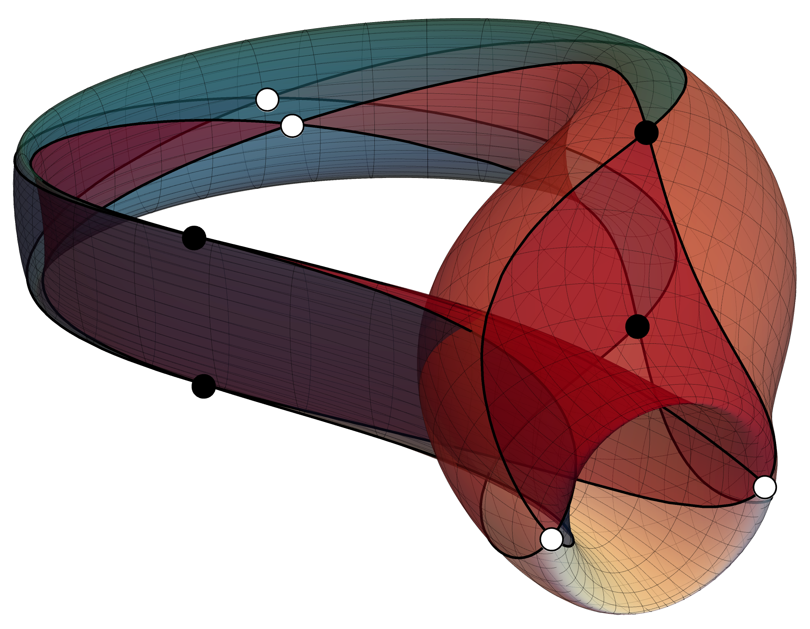
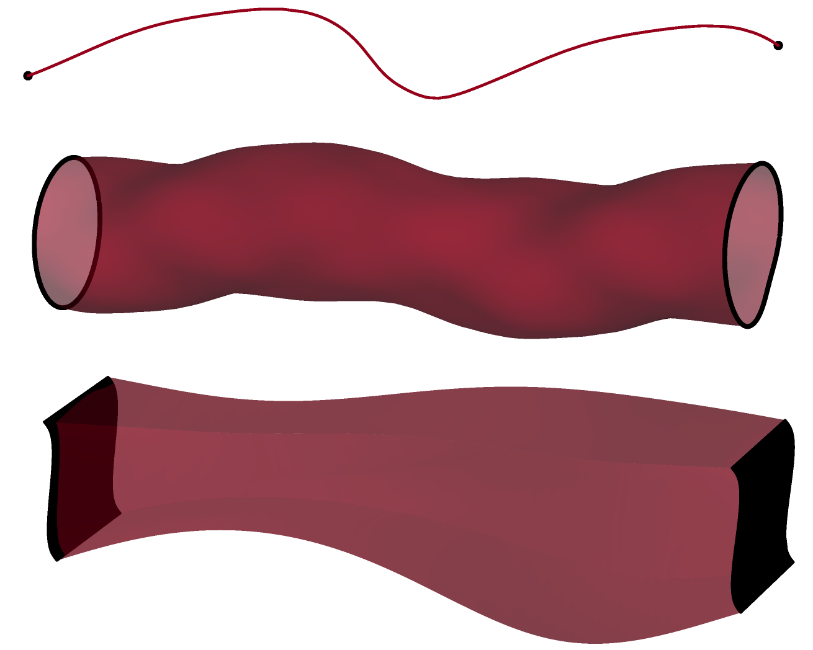
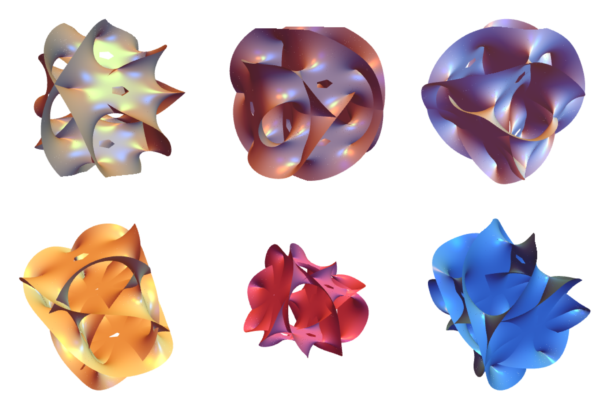
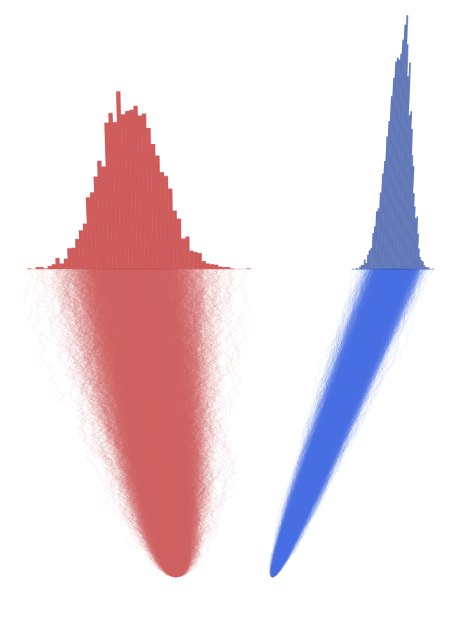

Machine learning in theoretical physics
The expressivity and predictive power of deep neural networks can be leveraged to construct and classify vast classes of quantum field theories. We are training ML/AI algorithms capable of characterising the rich and multifaceted spaces of supersymmetric gauge theories arising through string-theoretic constructions on singular spacetimes, and developing an understanding of quantum field theories as statistical ensembles of neural networks.
Peer reviewed publications:
- “Machine learning toric duality in brane tilings”, with T. Schettini Gherardini and B. Suzzoni. Published in a special issue of Advances in Theoretical and Mathematical Physics devoted to the Program on Mathematics and Machine Learning
held at Harvard University.
- “Conformal Defects in Neural Network Field Theories”, with B. Robinson and B. Suzzoni. Published in the Journal of High Energy Physics.
Ongoing work:
- “A Graph Neural Network framework for $L^{a,b,c}$ brane tilings”, with T. Schettini Gherardini and B. Suzzoni.
- “Infinite Width Neural Networks and $\widehat{\mathfrak{g}}_k$ Wess-Zumino-Witten models”, with B. Robinson and B. Suzzoni.

Holographic quantum field theories
According to the AdS/CFT paradigm, the highly quantum dynamics of certain supersymmetric field theories admit an emergent description in terms of weakly coupled theories of gravity in higher dimensions. This insight allows once-intractable computations in a gauge theory to be recast into more straightforward supergravity and string theory questions. I am particularly interested in exploring defect superconformal field theories of various (co)dimensions by engineering intersections of black branes, generalisations of black holes to superstring theory and M-theory.
Peer reviewed publications:
- “Holographic Weyl Anomalies for 4d Defects in 6d SCFTs”, with J. Estes, B. Robinson, and B. Suzzoni. Published in the Journal of High Energy Physics.
- “From Large to Small $\mathcal{N}$ = (4,4) Superconformal Surface Defects in Holographic 6d SCFTs”, with J. Estes, B. Robinson, and B. Suzzoni. Published in the Journal of High Energy Physics.
Pre-prints:
- “Supersymmetric Holomorphic Masses in AdS/CFT with Flavour”, with J. Holden, A. O'Bannon, J. Ratcliffe, R. Rodgers, and B. Suzzoni.

Supersymmetry
Work in progress with E. Marieni, B. Suzzoni, and I. Yaakov
Geometry and topology for superstring theory and M-theory
Elegant topological and algebro-geometric formalisms can be leveraged to describe the objects, structures, and spaces which arise in theoretical physics, and in particular in supersymmetry and string theory. In my MSc dissertation, I explored the framework of complex and exceptional generalised geometry and its use in superstring theories and M-theory.
- “(Exceptional) Generalised Geometry for Superstring Theory and M-Theory”, written under the supervision of Prof. Chris Hull FRS. Hosted on the Imperial College webpages.

Financial market modelling
The stochastic dynamics of financial option prices under the Black-Scholes model is analogous to the Schrödinger evolution of a quantum state in imaginary time. My collaborators and I used this duality to develop a Markov Chain Monte Carlo method based on a path integral formulation of option pricing.
Peer reviewed publications:
- “Path integral Monte Carlo method for option pricing”, with E. Panella, T. Schettini Gherardini, and D. D. Vvedensky. Published in Physica A: Statistical Mechanics and its Applications.
